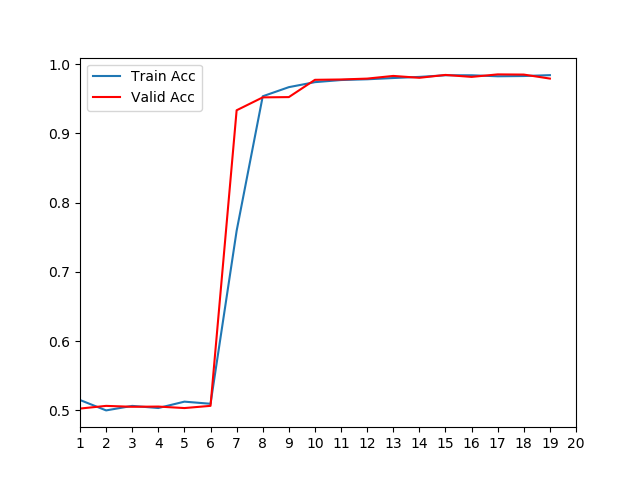

第八章:句子主题相关任务
8.1 任务介绍与模型选用¶
-
学习目标：
- 了解句子主题相关任务的相关知识。
- 了解选用的模型及其原因。
-
句子主题相关任务：
- 在多轮对话系统中，往往需要判断用户的最近两次回复是否围绕同一主题，来决定问答机器人是否也根据自己上一次的回复来讨论相关内容。在线医生问答过程中，同样需要这样的处理，确保用户一直讨论疾病有关的内容，来根据症状推断病情。这种任务的形式与判断两个句子是否连贯的形式相同，他们都需要输入两段文本内容，返回'是'或'否'的二分类标签。
-
选用的模型及其原因：
- 对话系统是开放的语言处理系统，可能出现各种文字，当我们的训练集有限无法覆盖大多数情况时，可以直接使用预训练模型进行文字表示。我们这里使用了bert-chinese预训练模型，同时为了适应我们研究的垂直领域，我们在后面自定义浅层的微调模型，它将由两层全连接网络组成，之后我们会详细介绍。
8.2 训练数据集¶
-
学习目标：
- 了解训练数据集的样式及其相关解释。
- 了解训练数据集的来源和扩充方式。
-
训练数据集的样式：
1 腹股沟淋巴结肿大腹股沟皮下包块 想请您帮忙解读一下上面的b超结果，是否要治疗，或做进一步的检查？>因为做完b超医生下班了
1 想请您帮忙解读一下上面的b超结果，是否要治疗，或做进一步的检查？因为做完b超医生下班了 左侧的包
块是否是普通的淋巴结肿大？
1 左侧的包块是否是普通的淋巴结肿大？ 按压不疼，但用手敲会有点刺痛
1 按压不疼，但用手敲会有点刺痛 ？
1 抗谬肋氏管激素偏低抗缪肋氏管激素偏低 昨天同房后出血了，以前都不会，先是鲜红色，今天变褐色，少
量，不想去医院检查，过几天它会自己停吧？还是要吃什么药？
0 水痘水痘后第七天脸上色素严重 五险一金会下调吗
0 腺样体重度肥大，分泌性中耳炎宝宝腺样体肥大怎么办 我爸因车祸死亡意外险能赔偿吗
0 尿血尿血这种情况要求高不高治疗 车辆保险理赔回执弄丢了可以补吗
0 尿路感染尿路感染备孕中 在单位辞职了，当时没办医保，是否能申办居民医保？
0 眼角有血块左眼角有血块状 有谁知道，安*长*树出险了需要提供哪些医院证明？
-
数据集的相关解释：
- 数据集中的第一列代表标签，1为正标签，代表后面的两句话是在讨论同一主题。0为负标签，代表后面的两句话不相关。
- 数据集中的第二列是用户回复的文本信息，第三列是与上一句相关或不相关的文本。
- 正负样本的比例是1:1左右
-
数据集所在位置：/data/doctor_online/bert_serve/train_data.csv
-
数据集来源及其扩充方式：
- 来源：正样本数据来自网络医患在线问答的真实语料。负样本来自其他使用其他问答语料的回复信息，保证两段文本不相关。
- 扩充方式：根据来源，可通过数据抓取技术对语料集进行扩充。
8.3 BERT中文预训练模型¶
-
学习目标：
- 了解BERT中文预训练模型的有关知识和作用。
- 掌握使用BERT中文预训练模型对句子编码的过程。
-
BERT中文预训练模型：
- BERT模型整体架构基于Transformer模型架构(只使用Transformer中的编码器), BERT中文预训练模型的Transformer编码器具有12层，输出层中的线性层具有768个节点，即输出张量最后一维的维度是768. 它使用的多头注意力机制结构中，头的数量为12, 模型总参数量为110M. 同时，它在中文简体和繁体上进行训练，因此适合中文简体和繁体任务。
-
BERT中文预训练模型作用：
- 在实际的文本任务处理中，有些训练语料很难获得，他们的总体数量和包含的词汇总数都非常少，不适合用于训练带有Embedding层的模型，但这些数据中却又蕴含这一些有价值的规律可以被模型挖掘，在这种情况下，使用预训练模型对原始文本进行编码是非常不错的选择，因为预训练模型来自大型语料，能够使得当前文本具有意义，虽然这些意义可能并不针对某个特定领域，但是这种缺陷可以使用微调模型来进行弥补。
-
使用BERT中文预训练模型对两个句子进行编码：
import torch
import torch.nn as nn
# 从本地加载
source = '/root/.cache/torch/hub/huggingface_pytorch-transformers_main'
# 从github加载
# source = 'huggingface/pytorch-transformers'
# 直接使用预训练的bert中文模型
model_name = 'bert-base-chinese'
# 通过torch.hub获得已经训练好的bert-base-chinese模型
model = torch.hub.load(source, 'model', model_name, source='local')
# 从github加载
# model = torch.hub.load(source, 'model', model_name, source='github')
# 获得对应的字符映射器，它将把中文的每个字映射成一个数字
tokenizer = torch.hub.load(source, 'tokenizer', model_name, source='local')
# 从github加载
# tokenizer = torch.hub.load(source, 'tokenizer', model_name, source='github')
def get_bert_encode(text_1, text_2, mark=102, max_len=10):
"""
description: 使用bert中文模型对输入的文本对进行编码
:param text_1: 代表输入的第一句话
:param text_2: 代表输入的第二句话
:param mark: 分隔标记，是预训练模型tokenizer本身的标记符号，当输入是两个文本时，
得到的index_tokens会以102进行分隔
:param max_len: 文本的允许最大长度，也是文本的规范长度即大于该长度要被截断，小于该长度要进行0补齐
:return 输入文本的bert编码
"""
# 使用tokenizer的encode方法对输入的两句文本进行字映射。
indexed_tokens = tokenizer.encode(text_1, text_2)
# 准备对映射后的文本进行规范长度处理即大于该长度要被截断，小于该长度要进行0补齐
# 所以需要先找到分隔标记的索引位置
k = indexed_tokens.index(mark)
# 首先对第一句话进行长度规范因此将indexed_tokens截取到[:k]判断
if len(indexed_tokens[:k]) >= max_len:
# 如果大于max_len, 则进行截断
indexed_tokens_1 = indexed_tokens[:max_len]
else:
# 否则使用[0]进行补齐，补齐的0的个数就是max_len-len(indexed_tokens[:k])
indexed_tokens_1 = indexed_tokens[:k] + (max_len-len(indexed_tokens[:k]))*[0]
# 同理下面是对第二句话进行规范长度处理，因此截取[k:]
if len(indexed_tokens[k+1:]) >= max_len:
# 如果大于max_len, 则进行截断
indexed_tokens_2 = indexed_tokens[k+1:k+1+max_len]
else:
# 否则使用[0]进行补齐，补齐的0的个数就是max_len-len(indexed_tokens[:k])
indexed_tokens_2 = indexed_tokens[k+1:] + (max_len-len(indexed_tokens[k+1:]))*[0]
# 最后将处理后的indexed_tokens_1和indexed_tokens_2再进行相加
indexed_tokens = indexed_tokens_1 + indexed_tokens_2
# 为了让模型在编码时能够更好的区分这两句话，我们可以使用分隔ids,
# 它是一个与indexed_tokens等长的向量，0元素的位置代表是第一句话
# 1元素的位置代表是第二句话，长度都是max_len
segments_ids = [0]*max_len + [1]*max_len
# 将segments_ids和indexed_tokens转换成模型需要的张量形式
segments_tensor = torch.tensor([segments_ids])
tokens_tensor = torch.tensor([indexed_tokens])
# 模型不自动求解梯度
with torch.no_grad():
# 使用bert model进行编码，传入参数tokens_tensor和segments_tensor得到encoded_layers
encoded_layers = model(tokens_tensor, token_type_ids=segments_tensor)
return encoded_layers
-
代码位置：/data/doctor_online/bert_serve/bert_chinese_encode.py
-
输入参数：
text_1 = "人生该如何起头" text_2 = "改变要如何起手" -
调用：
encoded_layers = get_bert_encode(text_1, text_2)[0] print(encoded_layers) print(encoded_layers.shape) -
输出效果：
tensor([[[ 1.0210, 0.0659, -0.3472, ..., 0.5131, -0.7699, 0.0202], [-0.1966, 0.2660, 0.3689, ..., -0.0650, -0.2853, -0.1777], [ 0.9295, -0.3890, -0.1026, ..., 1.3917, 0.4692, -0.0851], ..., [ 1.4777, 0.7781, -0.4310, ..., 0.7403, 0.2006, -0.1198], [ 0.3867, -0.2031, -0.0721, ..., 1.0050, -0.2479, -0.3525], [ 0.0599, 0.2883, -0.4011, ..., -0.1875, -0.2546, 0.0453]]]) torch.Size([1, 20, 768]) -
注意：有时候会产生在调用上述代码时打印字符串的问题。
比如调用代码打印时：
encoded_layers = get_bert_encode(text_1, text_2)[0]
print('encoder_layers: ', encoded_layers)
######################
输出的是一个字符串，而不是希望的数字化张量
encoder_layers: last_hidden_state
主要原因是对model函数返回的结果进行解包导致
- 小节总结：
- 学习了BERT中文预训练模型的有关知识和作用。
- 使用BERT中文预训练模型对句子编码的函数：get_bert_encode
8.4 微调模型¶
-
学习目标：
- 了解微调模型的作用。
- 掌握构建全连接微调模型的过程。
-
微调模型的作用：
- 微调模型一般用在迁移学习中的预训练模型之后，因为单纯的预训练模型往往不能针对特定领域或任务获得预期结果，需要通过微调模型在特定领域或任务上调节整体模型功能，使其适应当下问题。
-
构建全连接微调模型的代码分析：
import torch
import torch.nn as nn
import torch.nn.functional as F
class Net(nn.Module):
"""定义微调网络的类"""
def __init__(self, char_size=20, embedding_size=768, dropout=0.2):
"""
:param char_size: 输入句子中的字符数量，因为规范后每条句子长度是max_len, 因此char_size为2*max_len
:param embedding_size: 字嵌入的维度，因为使用的bert中文模型嵌入维度是768, 因此embedding_size为768
:param dropout: 为了防止过拟合，网络中将引入Dropout层，dropout为置0比率，默认是0.2
"""
super(Net, self).__init__()
# 将char_size和embedding_size传入其中
self.char_size = char_size
self.embedding_size = embedding_size
# 实例化化必要的层和层参数：
# 实例化Dropout层
self.dropout = nn.Dropout(p=dropout)
# 实例化第一个全连接层
self.fc1 = nn.Linear(char_size*embedding_size, 8)
# 实例化第二个全连接层
self.fc2 = nn.Linear(8, 2)
def forward(self, x):
# 对输入的张量形状进行变换，以满足接下来层的输入要求
x = x.view(-1, self.char_size*self.embedding_size)
# 使用dropout层
x = self.dropout(x)
# 使用第一个全连接层并使用relu函数
x = F.relu(self.fc1(x))
# 使用dropout层
x = self.dropout(x)
# 使用第二个全连接层并使用relu函数
x = F.relu(self.fc2(x))
output = self.softmax(x)
return output
-
代码位置：/data/doctor_online/bert_serve/finetuning_net.py
-
实例化参数：
embedding_size = 768 char_size = 20 dropout = 0.2 -
输入参数：
x = torch.randn(1, 20, 768) -
调用：
net = Net(char_size, embedding_size, dropout)
nr = net(x)
print(nr)
- 输出效果：
tensor([[0.0000, 0.4061]], grad_fn=<ReluBackward0>)
-
小节总结：
-
学习了微调模型的作用：
- 微调模型一般用在迁移学习中的预训练模型之后，因为单纯的预训练模型往往不能针对特定领域或任务获得预期结果，需要通过微调模型在特定领域或任务上调节整体模型功能，使其适应当下问题。
-
学习并实现了构建全连接微调模型的类：class Net(nn.Module)
-
8.5 进行模型训练¶
-
学习目标：
- 了解进行模型训练的步骤。
- 掌握模型训练中每个步骤的实现过程。
-
进行模型训练的步骤：
- 第一步：构建数据加载器函数。
- 第二步：构建模型训练函数。
- 第三步：构建模型验证函数。
- 第四步：调用训练和验证函数并打印日志。
- 第五步：绘制训练和验证的损失和准确率对照曲线。
- 第六步：模型保存。
-
第一步：构建数据加载器函数
import pandas as pd
from sklearn.utils import shuffle
from functools import reduce
from collections import Counter
from bert_chinese_encode import get_bert_encode
import torch
import torch.nn as nn
def data_loader(data_path, batch_size, split=0.2):
"""
description: 从持久化文件中加载数据，并划分训练集和验证集及其批次大小
:param data_path: 训练数据的持久化路径
:param batch_size: 训练和验证数据集的批次大小
:param split: 训练集与验证的划分比例
:return: 训练数据生成器，验证数据生成器，训练数据数量，验证数据数量
"""
# 使用pd进行csv数据的读取
data = pd.read_csv(data_path, header=None, sep="\t")
# 打印整体数据集上的正负样本数量
print("数据集的正负样本数量：")
print(dict(Counter(data[0].values)))
# 打乱数据集的顺序
data = shuffle(data).reset_index(drop=True)
# 划分训练集和验证集
split_point = int(len(data)*split)
valid_data = data[:split_point]
train_data = data[split_point:]
# 验证数据集中的数据总数至少能够满足一个批次
if len(valid_data) < batch_size:
raise("Batch size or split not match!")
def _loader_generator(data):
"""
description: 获得训练集/验证集的每个批次数据的生成器
:param data: 训练数据或验证数据
:return: 一个批次的训练数据或验证数据的生成器
"""
# 以每个批次的间隔遍历数据集
for batch in range(0, len(data), batch_size):
# 预定于batch数据的张量列表
batch_encoded = []
batch_labels = []
# 将一个bitch_size大小的数据转换成列表形式，[[label, text_1, text_2]]
# 并进行逐条遍历
for item in data[batch: batch+batch_size].values.tolist():
# 每条数据中都包含两句话，使用bert中文模型进行编码
encoded = get_bert_encode(item[1], item[2])
# 将编码后的每条数据装进预先定义好的列表中
batch_encoded.append(encoded)
# 同样将对应的该batch的标签装进labels列表中
batch_labels.append([item[0]])
# 使用reduce高阶函数将列表中的数据转换成模型需要的张量形式
# encoded的形状是(batch_size, 2*max_len, embedding_size)
encoded = reduce(lambda x, y : torch.cat((x, y), dim=0), batch_encoded)
labels = torch.tensor(reduce(lambda x, y : x + y, batch_labels))
# 以生成器的方式返回数据和标签
yield (encoded, labels)
# 对训练集和验证集分别使用_loader_generator函数，返回对应的生成器
# 最后还要返回训练集和验证集的样本数量
return _loader_generator(train_data), _loader_generator(valid_data), len(train_data), len(valid_data)
代码位置： /data/doctor_online/bert_serve/train.py
输入参数：
# 数据所在路径 data_path = "./train_data.csv" # 定义batch_size大小 batch_size = 32调用：
train_data_labels, valid_data_labels, \
train_data_len, valid_data_len = data_loader(data_path, batch_size)
print(next(train_data_labels))
print(next(valid_data_labels))
print("train_data_len:", train_data_len)
print("valid_data_len:", valid_data_len)
- 输出效果：
(tensor([[[-0.7295, 0.8199, 0.8320, ..., 0.0933, 1.2171, 0.4833],
[ 0.8707, 1.0131, -0.2556, ..., 0.2179, -1.0671, 0.1946],
[ 0.0344, -0.5605, -0.5658, ..., 1.0855, -0.9122, 0.0222]]], tensor([0, 0, 1, 1, 1, 1, 0, 1, 0, 0, ..., 1, 0, 1, 0, 1, 1, 1, 1]))
(tensor([[[-0.5263, -0.3897, -0.5725, ..., 0.5523, -0.2289, -0.8796],
[ 0.0468, -0.5291, -0.0247, ..., 0.4221, -0.2501, -0.0796],
[-0.2133, -0.5552, -0.0584, ..., -0.8031, 0.1753, -0.3476]]]), tensor([0, 1, 1, 0, 1, 1, 0, 0, 0, 0, 1, ..., 0, 0, 1, 0, 1,1, 1]))
train_data_len: 22186
valid_data_len: 5546
- 第二步：构建模型训练函数
# 加载微调网络 from finetuning_net import Net import torch.optim as optim # 定义embedding_size, char_size embedding_size = 768 char_size = 2 * max_len # 实例化微调网络 net = Net(embedding_size, char_size) # 定义交叉熵损失函数 criterion = nn.CrossEntropyLoss() # 定义SGD优化方法 optimizer = optim.SGD(net.parameters(), lr=0.001, momentum=0.9) def train(train_data_labels): """ description: 训练函数，在这个过程中将更新模型参数，并收集准确率和损失 :param train_data_labels: 训练数据和标签的生成器对象 :return: 整个训练过程的平均损失之和以及正确标签的累加数 """ # 定义训练过程的初始损失和准确率累加数 train_running_loss = 0.0 train_running_acc = 0.0 # 循环遍历训练数据和标签生成器，每个批次更新一次模型参数 for train_tensor, train_labels in train_data_labels: # 初始化该批次的优化器 optimizer.zero_grad() # 使用微调网络获得输出 train_outputs = net(train_tensor) # 得到该批次下的平均损失 train_loss = criterion(train_outputs, train_labels) # 将该批次的平均损失加到train_running_loss中 train_running_loss += train_loss.item() # 损失反向传播 train_loss.backward() # 优化器更新模型参数 optimizer.step() # 将该批次中正确的标签数量进行累加，以便之后计算准确率 train_running_acc += (train_outputs.argmax(1) == train_labels).sum().item() return train_running_loss, train_running_acc
- 代码位置： /data/doctor_online/bert_serve/train.py
- 第三步：模型验证函数
def valid(valid_data_labels):
"""
description: 验证函数，在这个过程中将验证模型的在新数据集上的标签，收集损失和准确率
:param valid_data_labels: 验证数据和标签的生成器对象
:return: 整个验证过程的平均损失之和以及正确标签的累加数
"""
# 定义训练过程的初始损失和准确率累加数
valid_running_loss = 0.0
valid_running_acc = 0.0
# 循环遍历验证数据和标签生成器
for valid_tensor, valid_labels in valid_data_labels:
# 不自动更新梯度
with torch.no_grad():
# 使用微调网络获得输出
valid_outputs = net(valid_tensor)
# 得到该批次下的平均损失
valid_loss = criterion(valid_outputs, valid_labels)
# 将该批次的平均损失加到valid_running_loss中
valid_running_loss += valid_loss.item()
# 将该批次中正确的标签数量进行累加，以便之后计算准确率
valid_running_acc += (valid_outputs.argmax(1) == valid_labels).sum().item()
return valid_running_loss, valid_running_acc
- 代码位置： /data/doctor_online/bert_serve/train.py
- 第四步：调用训练和验证函数并打印日志
# 定义训练轮数
epochs = 20
# 定义盛装每轮次的损失和准确率列表，用于制图
all_train_losses = []
all_valid_losses = []
all_train_acc = []
all_valid_acc = []
# 进行指定轮次的训练
for epoch in range(epochs):
# 打印轮次
print("Epoch:", epoch + 1)
# 通过数据加载器获得训练数据和验证数据生成器，以及对应的样本数量
train_data_labels, valid_data_labels, train_data_len, valid_data_len = data_loader(data_path, batch_size)
# 调用训练函数进行训练
train_running_loss, train_running_acc = train(train_data_labels)
# 调用验证函数进行验证
valid_running_loss, valid_running_acc = valid(valid_data_labels)
# 计算每一轮的平均损失，train_running_loss和valid_running_loss是每个批次的平均损失之和
# 因此将它们乘以batch_size就得到了该轮的总损失，除以样本数即该轮次的平均损失
train_average_loss = train_running_loss * batch_size / train_data_len
valid_average_loss = valid_running_loss * batch_size / valid_data_len
# train_running_acc和valid_running_acc是每个批次的正确标签累加和，
# 因此只需除以对应样本总数即是该轮次的准确率
train_average_acc = train_running_acc / train_data_len
valid_average_acc = valid_running_acc / valid_data_len
# 将该轮次的损失和准确率装进全局损失和准确率列表中，以便制图
all_train_losses.append(train_average_loss)
all_valid_losses.append(valid_average_loss)
all_train_acc.append(train_average_acc)
all_valid_acc.append(valid_average_acc)
# 打印该轮次下的训练损失和准确率以及验证损失和准确率
print("Train Loss:", train_average_loss, "|", "Train Acc:", train_average_acc)
print("Valid Loss:", valid_average_loss, "|", "Valid Acc:", valid_average_acc)
print('Finished Training')
代码位置： /data/doctor_online/bert_serve/train.py
输出效果：
Epoch: 1
Train Loss: 0.693169563147374 | Train Acc: 0.5084898843930635
Valid Loss: 0.6931480603018824 | Valid Acc: 0.5042777377521613
{1: 14015, 0: 13720}
Epoch: 2
Train Loss: 0.6931440165277162 | Train Acc: 0.514992774566474
Valid Loss: 0.6931474804019379 | Valid Acc: 0.5026567002881844
{1: 14015, 0: 13720}
Epoch: 3
Train Loss: 0.6931516138804441 | Train Acc: 0.5
Valid Loss: 0.69314516217633 | Valid Acc: 0.5065291786743515
{1: 14015, 0: 13720}
Epoch: 4
Train Loss: 0.6931474804878235 | Train Acc: 0.5065028901734104
Valid Loss: 0.6931472256650842 | Valid Acc: 0.5052233429394812
{1: 14015, 0: 13720}
Epoch: 5
Train Loss: 0.6931474804878235 | Train Acc: 0.5034320809248555
Valid Loss: 0.6931475739314165 | Valid Acc: 0.5055385446685879
{1: 14015, 0: 13720}
Epoch: 6
Train Loss: 0.6931492934337241 | Train Acc: 0.5126445086705202
Valid Loss: 0.6931462547277512 | Valid Acc: 0.5033771613832853
{1: 14015, 0: 13720}
Epoch: 7
Train Loss: 0.6931459204309938 | Train Acc: 0.5095736994219653
Valid Loss: 0.6931174922229921 | Valid Acc: 0.5065742074927954
{1: 14015, 0: 13720}
Epoch: 8
Train Loss: 0.5545259035391614 | Train Acc: 0.759393063583815
Valid Loss: 0.4199462383770805 | Valid Acc: 0.9335374639769453
{1: 14015, 0: 13720}
Epoch: 9
Train Loss: 0.4011955714294676 | Train Acc: 0.953757225433526
Valid Loss: 0.3964169790877045 | Valid Acc: 0.9521793948126801
{1: 14015, 0: 13720}
Epoch: 10
Train Loss: 0.3893018603497158 | Train Acc: 0.9669436416184971
Valid Loss: 0.3928600374491139 | Valid Acc: 0.9525846541786743
{1: 14015, 0: 13720}
Epoch: 11
Train Loss: 0.3857506763383832 | Train Acc: 0.9741690751445087
Valid Loss: 0.38195425426582097 | Valid Acc: 0.9775306195965417
{1: 14015, 0: 13720}
Epoch: 12
Train Loss: 0.38368317760484066 | Train Acc: 0.9772398843930635
Valid Loss: 0.37680484129046155 | Valid Acc: 0.9780259365994236
{1: 14015, 0: 13720}
Epoch: 13
Train Loss: 0.37407022137517876 | Train Acc: 0.9783236994219653
Valid Loss: 0.3750278927192564 | Valid Acc: 0.9792867435158501
{1: 14015, 0: 13720}
Epoch: 14
Train Loss: 0.3707401707682306 | Train Acc: 0.9801300578034682
Valid Loss: 0.37273150721097886 | Valid Acc: 0.9831592219020173
{1: 14015, 0: 13720}
Epoch: 15
Train Loss: 0.37279492521906177 | Train Acc: 0.9817557803468208
Valid Loss: 0.3706809586123362 | Valid Acc: 0.9804574927953891
{1: 14015, 0: 13720}
Epoch: 16
Train Loss: 0.37660940017314315 | Train Acc: 0.9841040462427746
Valid Loss: 0.3688154769390392 | Valid Acc: 0.984600144092219
{1: 14015, 0: 13720}
Epoch: 17
Train Loss: 0.3749892661681754 | Train Acc: 0.9841040462427746
Valid Loss: 0.3688570175760074 | Valid Acc: 0.9817633285302594
{1: 14015, 0: 13720}
Epoch: 18
Train Loss: 0.37156562515765945 | Train Acc: 0.9826589595375722
Valid Loss: 0.36880484627028365 | Valid Acc: 0.9853656340057637
{1: 14015, 0: 13720}
Epoch: 19
Train Loss: 0.3674713007976554 | Train Acc: 0.9830202312138728
Valid Loss: 0.366314563545954 | Valid Acc: 0.9850954610951008
{1: 14015, 0: 13720}
Epoch: 20
Train Loss: 0.36878046806837095 | Train Acc: 0.9842846820809249
Valid Loss: 0.367835852100114 | Valid Acc: 0.9793317723342939
Finished Training
- 第五步：绘制训练和验证的损失和准确率对照曲线
# 导入制图工具包
import matplotlib.pyplot as plt
from matplotlib.pyplot import MultipleLocator
# 创建第一张画布
plt.figure(0)
# 绘制训练损失曲线
plt.plot(all_train_losses, label="Train Loss")
# 绘制验证损失曲线，颜色为红色
plt.plot(all_valid_losses, color="red", label="Valid Loss")
# 定义横坐标刻度间隔对象，间隔为1, 代表每一轮次
x_major_locator=MultipleLocator(1)
# 获得当前坐标图句柄
ax=plt.gca()
# 设置横坐标刻度间隔
ax.xaxis.set_major_locator(x_major_locator)
# 设置横坐标取值范围
plt.xlim(1,epochs)
# 曲线说明在左上方
plt.legend(loc='upper left')
# 保存图片
plt.savefig("./loss.png")
# 创建第二张画布
plt.figure(1)
# 绘制训练准确率曲线
plt.plot(all_train_acc, label="Train Acc")
# 绘制验证准确率曲线，颜色为红色
plt.plot(all_valid_acc, color="red", label="Valid Acc")
# 定义横坐标刻度间隔对象，间隔为1, 代表每一轮次
x_major_locator=MultipleLocator(1)
# 获得当前坐标图句柄
ax=plt.gca()
# 设置横坐标刻度间隔
ax.xaxis.set_major_locator(x_major_locator)
# 设置横坐标取值范围
plt.xlim(1,epochs)
# 曲线说明在左上方
plt.legend(loc='upper left')
# 保存图片
plt.savefig("./acc.png")
代码位置： /data/doctor_online/bert_serve/train.py
训练和验证损失对照曲线：

- 训练和验证准确率对照曲线：

- 分析：
- 根据损失对照曲线，微调模型在第6轮左右开始掌握数据规律迅速下降，说明模型能够从数据中获取语料特征，正在收敛。根据准确率对照曲线中验证准确率在第10轮左右区域稳定，最终维持在98%左右。
- 第六步：模型保存
# 模型保存时间 time_ = int(time.time()) # 保存路径 MODEL_PATH = './model/BERT_net_%d.pth' % time_ # 保存模型参数 torch.save(rnn.state_dict(), MODEL_PATH)
代码位置： /data/doctor_online/bert_serve/train.py
输出效果：
- 在/data/bert_serve/路径下生成BERT_net_ + 时间戳。pth的文件。
- 小节总结：
- 学习了进行模型训练的步骤：
- 第一步：构建数据加载器函数。
- 第二步：构建模型训练函数。
- 第三步：构建模型验证函数。
- 第四步：调用训练和验证函数并打印日志。
- 第五步：绘制训练和验证的损失和准确率对照曲线。
- 第六步：模型保存。
- 学习了进行模型训练的步骤：
8.6 模型部署¶
-
学习目标：
- 掌握使用Flask框架进行模型部署的实现过程。
-
使用Flask框架进行模型部署的步骤：
- 第一步：部署模型预测代码。
- 第二步：以挂起的方式启动服务。
- 第三步：进行测试。
-
第一步：部署模型预测代码
from flask import Flask
from flask import request
app = Flask(__name__)
import torch
# 导入中文预训练模型编码函数
from bert_chinese_encode import get_bert_encode
# 导入微调网络
from finetuning_net import Net
# 导入训练好的模型
MODEL_PATH = "./model/BERT_net.pth"
# 定义实例化模型参数
embedding_size = 768
char_size = 20
dropout = 0.2
# 初始化微调网络模型
net = Net(embedding_size, char_size, dropout)
# 加载模型参数
net.load_state_dict(torch.load(MODEL_PATH))
# 使用评估模式
net.eval()
# 定义服务请求路径和方式
@app.route('/v1/recognition/', methods=["POST"])
def recognition():
# 接收数据
text_1 = request.form['text1']
text_2 = request.form['text2']
# 对原始文本进行编码
inputs = get_bert_encode(text_1, text_2, mark=102, max_len=10)
# 使用微调模型进行预测
outputs = net(inputs)
# 获得预测结果
_, predicted = torch.max(outputs, 1)
# 返回字符串类型的结果
return str(predicted.item())
- 代码位置：/data/doctor_online/bert_serve/app.py
-
第二步：启动服务
gunicorn -w 1 -b 0.0.0.0:5001 app:app -
第三步：进行测试
- 测试脚本：
import requests
url = "http://0.0.0.0:5001/v1/recognition/"
data = {"text1":"人生该如何起头", "text2": "改变要如何起手"}
res = requests.post(url, data=data)
print("预测样本：", data["text_1"], "|", data["text_2"])
print("预测结果：", res.text)
代码位置：/data/doctor_online/bert_serve/test.py
运行脚本：
python test.py输出效果：
预测样本：人生该如何起头 | 改变要如何起手
预测结果：1
- 小节总结：
- 学习了使用Flask框架进行模型部署的实现过程：
- 第一步：部署模型预测代码。
- 第二步：以挂起的方式启动服务。
- 第三步：进行测试。
- 学习了使用Flask框架进行模型部署的实现过程：